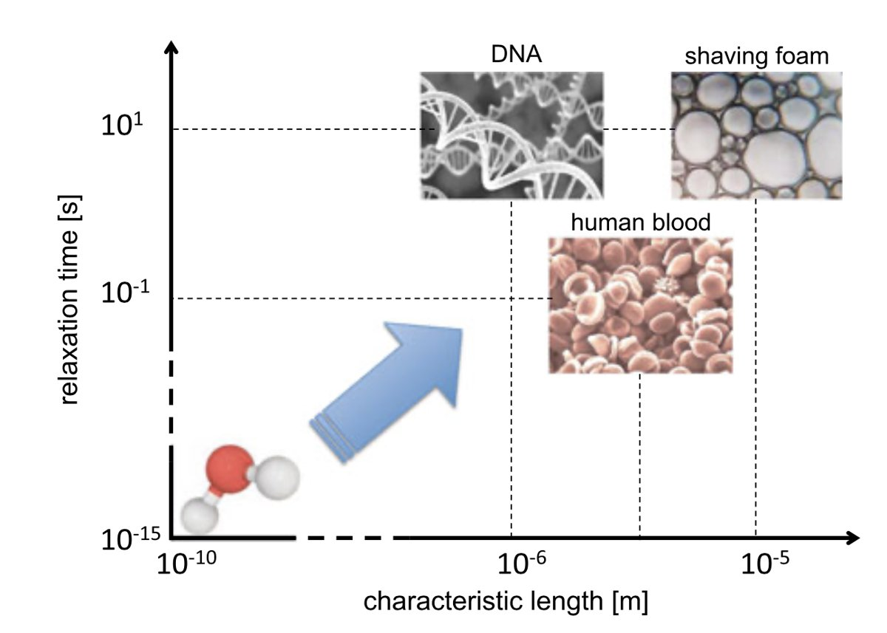
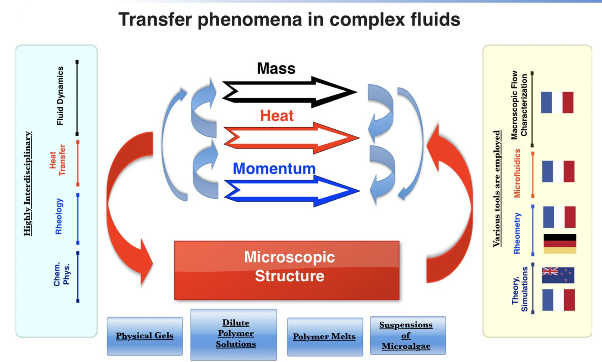
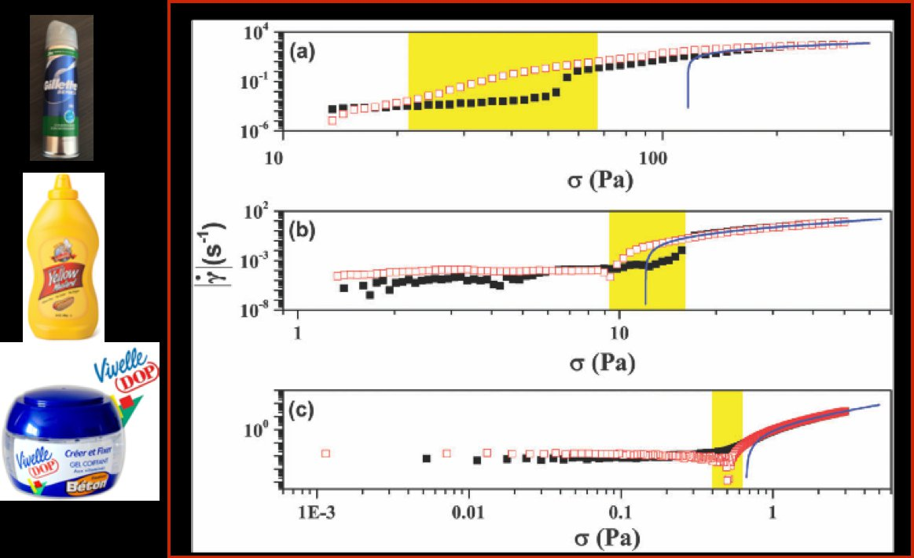
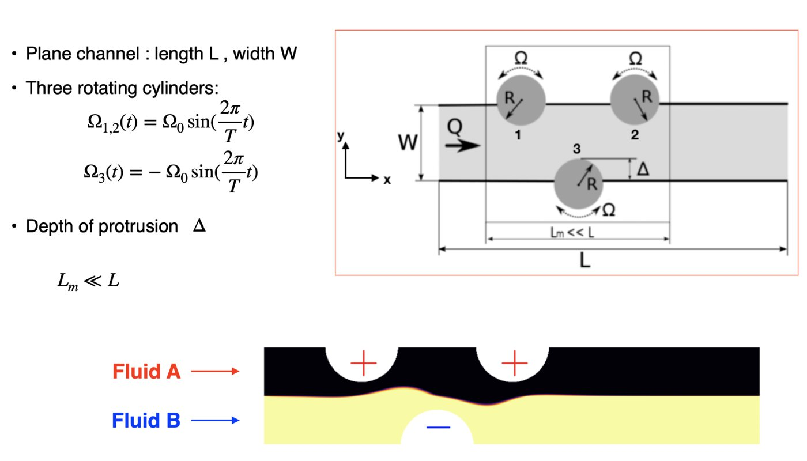
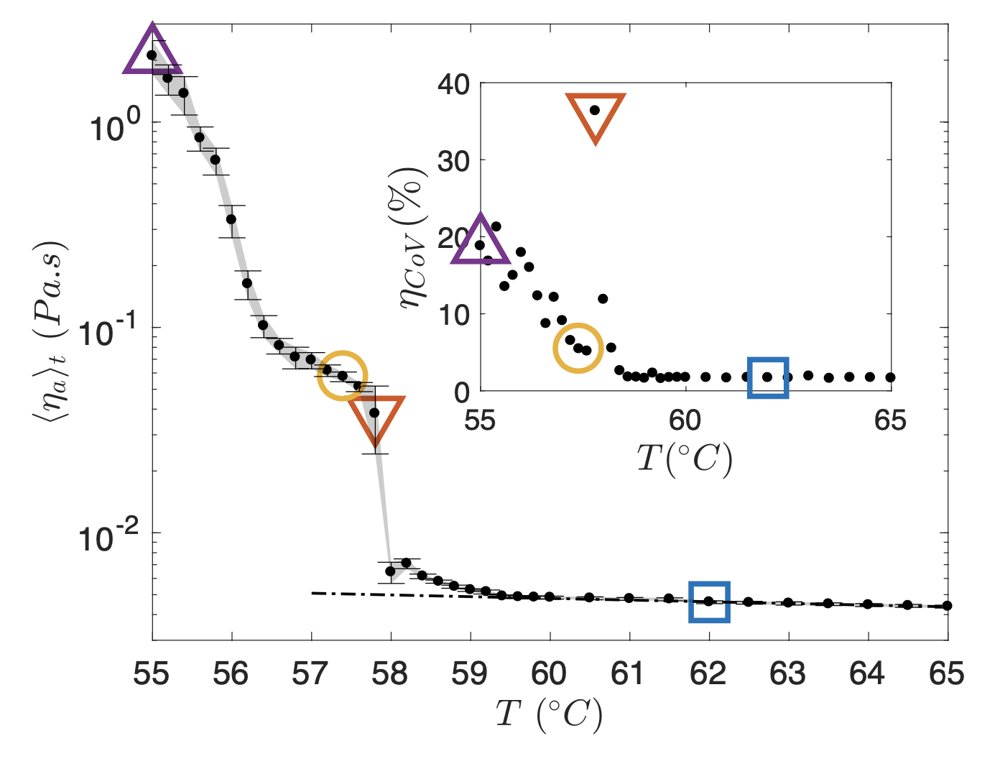
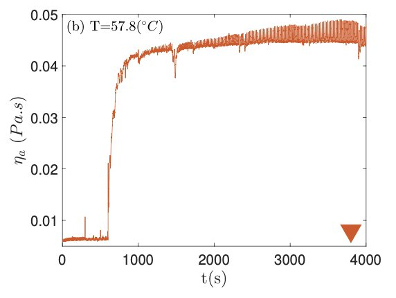

Research
Transport phenomena in complex fluids
Our main scientific interest is the physics of transport of heat, mass and momentum in “complex fluids”. Loosely speaking, these are fluids made of building blocks much larger than the molecules of simple fluids such as water (Fig. 1). Their microscopic structure and their flow are strongly coupled, which gives rise to rich and often surprising behaviour.


Elastic turbulence in polymer solutions
Adding a small amount of flexible polymer to a viscous liquid can make its flow chaotic even when inertia is negligible. The elastic stresses stored in the stretched polymers feed back on the flow, producing a random, turbulent-like motion known as elastic turbulence. This research line began with Teo’s PhD at the Weizmann Institute of Science, with Victor Steinberg: that work characterised the statistical and scaling properties of elastic turbulence and showed that it mixes fluids efficiently in micro-channels, where ordinary turbulence cannot occur.
We now use elastic turbulence to enhance heat transfer and emulsification at small scales, and study how it develops in canonical flows such as the Taylor–Couette flow.
- Chaotic flow and efficient mixing in a microchannel with a polymer solution, Phys. Rev. E 69, 066305 (2004)
- Role of elastic stress in statistical and scaling properties of elastic turbulence, Phys. Rev. Lett. 96, 214502 (2006)
- Efficient heat transfer in a regime of elastic turbulence, J. Non-Newton. Fluid Mech. 223, 62–76 (2015)
- Characterisation of elastic turbulence in a serpentine micro-channel, Phys. Fluids 29, 083102 (2017)
- Drag reduction assisted emulsification in a micro-channel, J. Non-Newton. Fluid Mech. 329, 105247 (2024)
Yield-stress materials: the “slow” and the “curious”
Many materials respond to stress in two ways. At low applied stress they behave like solids: they may deform, but they do not flow. Above a critical stress, the yield stress, they flow like (usually non-Newtonian) fluids. These yield-stress materials are everywhere, from food pastes, hair gels and emulsions to cement and mud, and they matter to the food, cosmetic, pharmaceutical and oil-field industries.
We study them with table-top and microfluidic experiments, simple physical models and numerical simulations. Our work on viscoplasticity is strengthened by international collaborations, which bring in skills we do not have in-house.
The solid–fluid transition: from the “yield stress myth” to the “viscoplastic Holy Grail”

Confined flows of a yield-stress fluid with wall slip
The microscopic structure of a physical gel such as Carbopol flowing in a micro-channel is strongly heterogeneous. The classical picture of wall slip, a thin layer of Newtonian solvent of constant width near the walls, is therefore not justified. We proposed a method that relates macroscopic rheological measurements directly to the measured velocity gradients at the wall. The scaling it yields differs substantially from previously published results (Phys. Rev. Fluids 5, 083303, 2020).
Active mixing of yield-stress fluids by laminar chaotic advection
Two fluid streams naturally mix by molecular diffusion. In highly viscous fluids the diffusion coefficients are small and the mixing times become very long, which is a real problem for the cosmetic, food and polymer-processing industries, among others. We designed an in-line mixer whose walls contain three arcs that rotate back and forth with the same amplitude but different phase shifts, creating chaotic advection even at low Reynolds number.

Yielding to heat: chaos in a melting pot
We usually think of yielding in terms of stress, but a broad class of materials, the phase-change materials, yield to heat instead. Below their melting temperature they behave as solids; above it they flow. The literature on these materials is extensive, but a basic question had not been addressed: what happens to the hydrodynamic stability of such a material as it is gradually cooled while being sheared at a constant rate? We studied this in a cone-and-plate rheometric flow combined with in-situ optical microscopy (J. Fluid Mech. 918, A47, 2021).


Molten polymeric systems
Polymer processing operations such as extrusion, film casting and blow moulding involve strong, often extensional, flows of molten polymers. We study the extensional rheology of polymer melts, including the “viscosity overshoot”, local versus integral measurements of the extensional viscosity, and necking and rupture under uniaxial extension, as well as processing instabilities such as sharkskin and draw resonance, and flow-induced crystallisation. This work was carried out with Helmut Münstedt and with Zdeněk Starý (Institute of Macromolecular Chemistry, Czech Academy of Sciences), and at LTeN with Nicolas Boyard.
- Local versus integral measurements of the extensional viscosity of polymer melts, J. Rheol. 53, 1363–1377 (2009)
- Comparative investigations of surface instabilities (“sharkskin”) of a linear and a long-chain branched polyethylene, J. Non-Newton. Fluid Mech. 165, 1093–1104 (2010)
- Deformation regimes, failure and rupture of a low density polyethylene (LDPE) melt undergoing uniaxial extension, J. Non-Newton. Fluid Mech. 219, 35–49 (2015)
- A novel approach to the study of extensional flow-induced crystallization, Polymer Testing 96, 107060 (2021)
Chaotic mixing of shear-thinning fluids
This project aims to clarify the role of shear thinning in mixing by laminar chaotic advection. We perform numerical simulations with the Gerris flow solver developed by Stéphane Popinet, in the rotating arc-wall mixer developed within the Naymis project (see above). Throughout the simulations we keep Re = 1, St = 1 and Pe = 107, and vary the power-law index from n = 1 (Newtonian) down to n = 0.2.
As a reference we chose a forcing protocol that mixes poorly in the Newtonian case. Keeping the same dimensionless numbers but lowering the power-law index to n = 0.2 changes the mixing dynamics dramatically. At fixed Re, St and Pe, shear thinning greatly enhances mixing.
Rayleigh–Taylor instability in complex fluids
A heavier fluid placed on top of a lighter one is unstable: this is the Rayleigh–Taylor instability. The goal of this project is to understand how the onset and development of the instability can be controlled by tuning the rheological properties of the two fluids. The project combines table-top experiments with numerical simulations using the Gerris flow solver. As an example, we study what happens when the top fluid is strongly shear-thinning (power-law index n = 0.45) and the bottom fluid is Newtonian, with a viscosity about ten times smaller than the consistency of the top fluid.
Suspensions of micro-algae
Micro-algae are grown in photobioreactors to produce biofuels and high-value compounds. Their suspensions are complex fluids, and their rheology and flow affect how efficiently the reactors work. With Jérémy Pruvost and colleagues at LTeN and GEPEA, we characterised the rheology and micro-channel flows of suspensions of Chlorella vulgaris over a range of volume fractions. Current PhD work (Masaya Hashimoto) focuses on fuel extraction from the colonial micro-alga Botryococcus braunii.
- Rheological properties of suspensions of the green microalga Chlorella vulgaris at various volume fractions, Rheol. Acta 52, 589–605 (2013)
- Microscopic flows of suspensions of the green non-motile Chlorella micro-alga at various volume fractions, J. Non-Newton. Fluid Mech. 231, 91–101 (2016)
Talks & lectures
- Mixing of yield stress materials: Mission impossible?, LTeN seminar, 2 December 2021 (slides).
- “The mathematics of love”, public lecture as an Erskine Fellow at the University of Canterbury (Christchurch, New Zealand), August 2022 (video).
- “Et si la microfluidique pouvait sauver des vies ?”, Rencontres Innovation de l’Université de Nantes, “Dispositifs médicaux”, Chambre de Commerce et d’Industrie de Nantes.
- Invited lecture at the Banff International Research Station, “Viscoplastic Fluids: From Theory to Application” workshop.